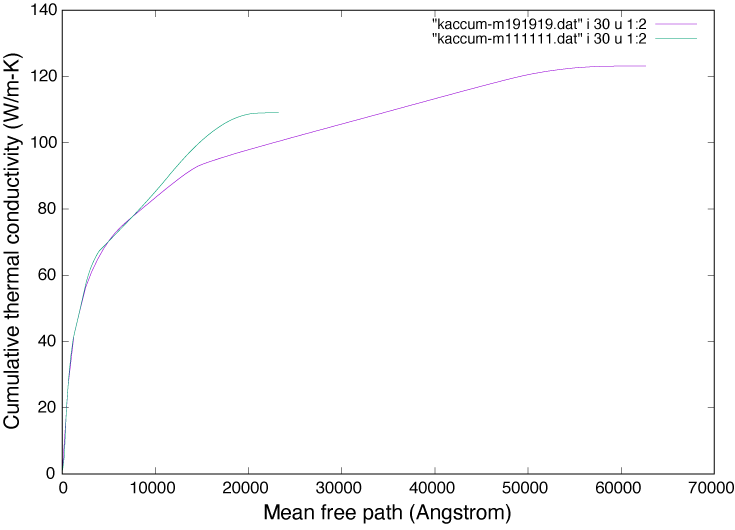
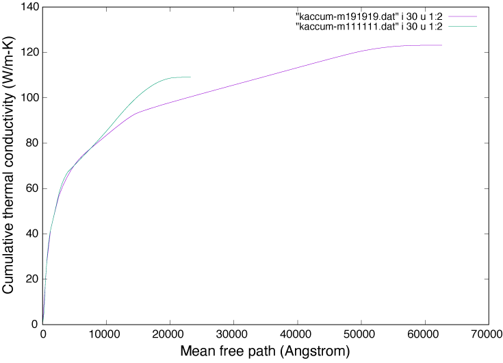

Welcome to phono3py¶
This software calculates phonon-phonon interaction and related properties using the supercell approach. For example, the following physical properties are obtained:
Lattice thermal conductivity (RTA and direct solution of LBTE)
Phonon lifetime/linewidth
Imaginary part of self energy
Joint density of states (JDOS) and weighted-JDOS
Some papers that may introduce phono3py well:
Theoretical background is summarized in this paper: http://dx.doi.org/10.1103/PhysRevB.91.094306 (arxiv http://arxiv.org/abs/1501.00691).
Introduction to phono3py application: https://doi.org/10.1103/PhysRevB.97.224306 (open access).
The source code is found at https://github.com/phonopy/phono3py (BSD-3-Clause). The code is written in Python extended with C and written as:
Works at least on Linux systems and MacOS easily.
Each calculation is distributed over CPU-cores by OpenMP.
Phonon lifetime (or ph-ph collision) calculations of respective phonon modes can be executed as independent calculations.
Thermal conductivity calculations are highly efficiently distributed over nodes (see Workload distribution).
User interfaces for VASP, QE (pw), CRYSTAL, TURBOMOLE, and Abinit are built in (see Interfaces to calculators).
API is prepared to operate phono3py from Python (example).
Some tools to analyze the calculated results are prepared (see Auxiliary tools).
 

{kind=link}

Documentation¶
- Installation
- Examples
- Interfaces to calculators (VASP, QE, CRYSTAL, Abinit, TURBOMOLE)
- Command options / Setting tags
- Output files
- How to read the results stored in hdf5 files
- Auxiliary tools
- Direct solution of linearized phonon Boltzmann equation
- Workload distribution
- Force constants calculation with cutoff pair-distance
- External tools
- Tips
- How to cite phono3py
- Change Log
Mailing list¶
For questions, bug reports, and comments, please visit following mailing list:
https://lists.sourceforge.net/lists/listinfo/phonopy-users
Message body including attached files has to be smaller than 300 KB.
License¶
BSD-3-Clause (New BSD)
Contact¶
Author: Atsushi Togo